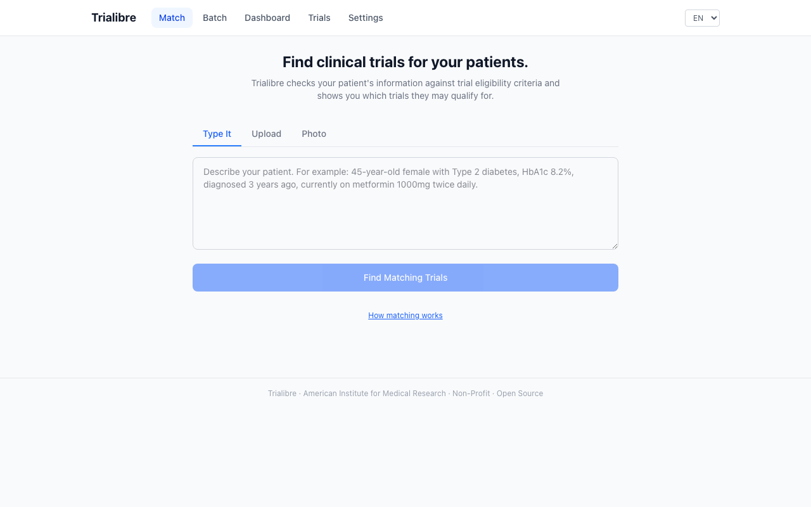

Trialibre helps clinicians and researchers find clinical trials for their patients. Upload a patient description, and Trialibre checks it against trial eligibility criteria — one by one.

Every feature designed around the needs of coordinators, investigators, and research teams — not just engineers.
Type, upload, or photograph a patient record. Trialibre checks each eligibility criterion individually and shows which are met, not met, or need verification.
Upload your own protocol (PDF, DOCX, or paste text) and match patients against it. Inclusion and exclusion criteria are extracted automatically.
Enter an NCT number to import a trial directly from ClinicalTrials.gov with full eligibility criteria and site locations.
Built-in de-identification strips patient names and IDs before cloud processing. Or run fully offline with a local AI model — nothing leaves your device.
Interface available in English, French, Portuguese, Spanish, and Arabic. Patient notes in any language are automatically detected and processed.
Works with Claude, GPT-4, Llama via Ollama, or any OpenAI-compatible endpoint. Switch providers without changing anything else.
Upload a CSV of patients to screen against all loaded trials at once. Export results for your team.
Generate referral summaries and send them via email or WhatsApp. Track referral status from your dashboard.
Built-in metrics (Precision, NDCG, MRR) with annotated ground truth data across 12 therapeutic areas for validating match quality.
Type a clinical note, upload a PDF, or take a photo of a patient record. Supports 8 input formats including FHIR and HL7.
Trialibre evaluates every inclusion and exclusion criterion individually, with plain-language reasoning for each decision.
Trials are ranked as Strong Match, Possible Match, or Unlikely. See exactly which criteria were met, not met, or need verification.
Choose the provider that fits your budget, privacy requirements, and infrastructure.
No API key needed — sandbox mode lets you explore the full interface with sample data immediately.
Trialibre is developed by the American Institute for Medical Research because clinical trial matching should be accessible to every clinician and researcher — not locked behind expensive proprietary platforms.